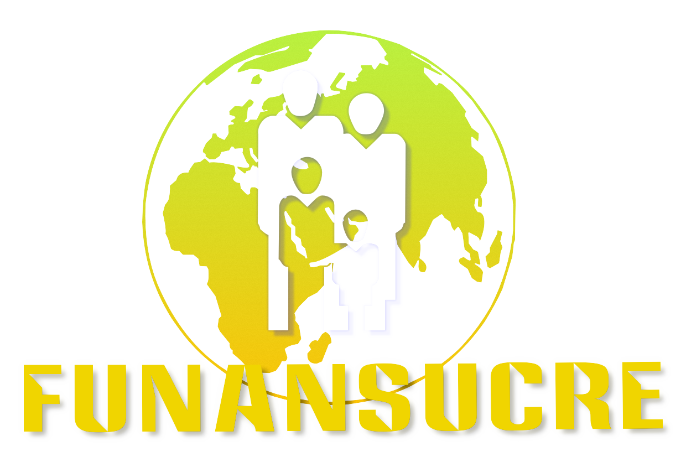

Visión
FUNANSUCRE es una entidad sin ánimo de
lucro que centra su quehacer en el trabajo
de sus profesionales para dinamizar
procesos en las dimensiones científicas,
tecnológicas, humanista y cultural
mediante la promoción de los derechos
de la población vulnerable y su
interrelación con el entorno atendiendo
a las necesidades de esta población y al
contexto que les permita el desarrollo
personal, profesional y comunitario.
